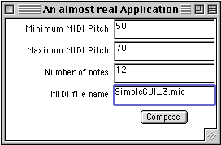

|
|||||||
Graphical User Interface - Stage 3
This third stage adds three new aspects to the GUI.
1) It introduces the GridLayout which organises the arrangement of components in the frame.
2) It adds more Text Fields so that variables in the music composition
algorithms can be varied at each run.
These also require text labels to name the fields and some conversion
from the text field to variable integers.
3) We finally make the close box work. Such that it closes the window and shuts down the program.
This is what the GUI will look similar to this.
Let's have a closer look.
import java.awt.*; |
public class SimpleGUI3 extends Frame implements ActionListener, WindowListener, JMC{ |
This GUI has four TextFields which are next declared.
The main() method is a simple call to the constructor.
// constructor |
The first part of the constructor (which does most of the work in this class) calls the Frame class (super class) with the window title, the frame is registered with the windowListener and its background colour set to green.
The Frame employs the GridLayout which arranges areas in the frame into
equal sized rectangles.
The arguments are number-of-rows, number-of-collumns, horizontal-gap-between-cells,
vertical-gap-between-cells.
The first label and text field are next added to the frame.
Label maxPL = new Label("Maximum MIDI Pitch", Label.RIGHT); |
The second part of the constructor continues to add elements to the frame as we have seen in earlier GUI tutorials.
The button is this time put on to a panel. Doing this stops the button
occupying the entire space of the cell in the frame.
On a panel the button is more well behaved, its size is determined by
the button label and OS look and feel.
A panel called 'p' is created, the button is declared and added to the
panel, then the panel is added to the frame layout.
// Deal with the window closebox |
Here the user events 'seen' by the WindowListener interface are dealt
with.
The only one we are concerned with is the WindowClosing event which is
generated when the window's close box is clicked.
When this happens the Java application is simply told to quit with the
command System.exit(0)
.
When implementing an interface all the methods of the interface must be
overridden, and that is why we have all the other window method stubs
- that is they consist only of {} and so do nothing. It would be easy
now to add code to deal with each of these events. it also gives you a
good idea of the kinds of window events that can be caught.
// Deal with the button click |
This method deals with the button click. It check to see if there is a name of the MIDI file in the TextField, if so it gets all values and passes them to the makeMusic() method. If not, it gets other values and passes a default file name to the makeMusic() method.
Notice that to get the numerical values from the TextFields they must be converted from strings to integers with code similar to:
Integer.valueOf(minPitch.getText()).intValue()
Where minPitch is the name of the TextField. Complicated I admit, but . . . just copy it and use it.
public void makeMusic(String fileName, int minPitchVal, int maxPitchVal, |
This is the code which generates the jMusic score. It simply generates a stochastic melody with stochastic dynamics.